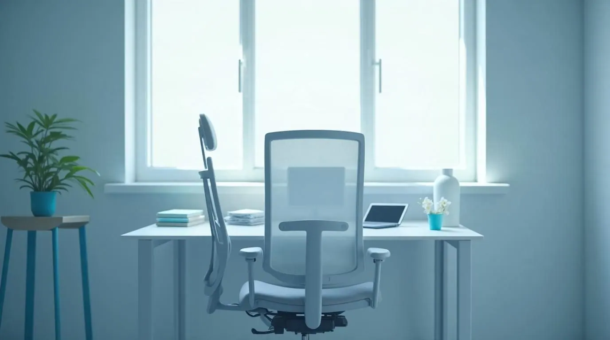

겨울에 두꺼운 패딩 위로 아기띠를 하면 끈이 느슨해지고 아기 위치가 내려가 어깨와 날개뼈 사이, 허리에 부담이 몰리기 쉬워, 아기띠 착용 높이와 외출 동선, 쉬는 간격부터 함께 살핍니다.
여쭙는 것
- 결리는 자리는 목 뒤, 어깨 위, 날개뼈 사이, 허리 중 어디인가요? 한쪽인가요 양…
- 아기띠를 한 지 얼마쯤 지나면 불편해지나요? 풀고 나면 얼마 만에 가라앉나요?
- 외투는 아기띠 안에 입으시나요, 위에 입으시나요?
생활에서 해 볼 것
- 집을 나서기 전, 외투를 입기 전에 아기띠부터 하고 아기를 안은 뒤 그 위로 큰 외…
- 외투 위로 할 수밖에 없다면 외투를 입은 상태에서 허리 벨트를 허리뼈 높이, 배꼽…
- 아기의 머리가 고개를 살짝 숙이면 입맞춤할 수 있을 정도의 높이에 오도록 맞추고,…
한의원에서 함께 살필 것
- 아기띠 착용법을 바꿨는데도 날개뼈 사이와 어깨 결림이 2주 넘게 이어지는 경우
- 출산 뒤 몸이 쉽게 지치고 손발이 차며 어깨와 허리가 함께 불편한 경우
- 손목이나 엄지 쪽 통증이 어깨 결림과 함께 있는 경우
먼저 확인이 필요한 신호
- 팔이나 손으로 저림이 뻗치고 손에 힘이 빠지는 경우
- 넘어지거나 미끄러진 뒤 통증이 생기고 움직이기 어려운 경우
- 가슴 통증이나 숨이 차는 느낌이 어깨 통증과 함께 오는 경우
겨울에 두꺼운 패딩을 입은 채 그 위로 아기띠를 하면 어깨끈과 허리 벨트가 외투에 떠서 느슨해지고, 아기가 평소보다 아래로 처져 어깨와 날개뼈 사이, 허리가 함께 결리는 분이 많습니다. 상도동처럼 언덕길이 많은 동네에서는 오르막에서 몸이 앞으로 숙여지고 내리막에서는 발밑이 잘 보이지 않아 긴장이 더해지기 쉽습니다. 외투를 아기띠 위로 입는 방식으로 바꾸거나 끈을 외투 두께만큼 다시 조이고, 아기 위치를 높이며, 외출 동선과 쉬는 간격을 정하는 것만으로도 어깨와 등의 부담이 덜한 분이 많습니다. 다만 팔이나 손으로 저린 느낌이 뻗치거나 힘이 빠지는 느낌이 있다면, 혹은 넘어진 뒤 통증이 생겼다면 먼저 진료를 받으셔야 합니다.
왜 겨울에 아기띠를 하면 어깨와 등이 더 결리나요
- 두꺼운 외투 위로 아기띠를 하면 어깨끈과 허리 벨트가 몸에 밀착되지 못하고, 패딩이 눌리면서 시간이 갈수록 끈이 느슨해집니다. 그러면 아기의 무게가 앞으로 쏠려 어깨와 목 뒤가 그 무게를 붙잡게 됩니다.
- 허리 벨트가 허리뼈 높이가 아니라 골반 아래로 내려가면 아기 무게를 골반이 받쳐 주지 못하고 어깨로 넘어갑니다.
- 아기가 아래로 처지면 몸이 뒤로 젖혀지며 균형을 잡게 되어 허리 아래가 눌리고, 반대로 아기를 보느라 고개를 숙이면 목과 날개뼈 사이가 당깁니다.
- 언덕길을 오를 때는 몸이 앞으로 숙여져 어깨와 등이 더 일하고, 내리막에서는 미끄러질까 봐 발끝과 어깨에 힘이 잔뜩 들어갑니다.
- 추운 날에는 몸을 움츠리느라 어깨가 귀 쪽으로 올라간 채 걷게 되어 목과 어깨 근육이 쉬지 못합니다.
- 기저귀 가방을 한쪽 어깨에 메고 장바구니까지 들면 부담이 한쪽으로 몰립니다.
- 출산 뒤 몇 달 동안은 몸이 회복 중이고 잠이 부족해 근육이 쉽게 지치는 시기라, 같은 무게도 더 무겁게 느껴질 수 있습니다.
- 한의학에서는 이런 상태를 기혈이 지치고 찬 기운이 근육에 머문 흐름으로 보는 경우가 많아, 결리는 자리와 함께 피로, 잠, 손발의 온기를 살핍니다.

먼저 이렇게 여쭙니다
- 결리는 자리는 목 뒤, 어깨 위, 날개뼈 사이, 허리 중 어디인가요? 한쪽인가요 양쪽인가요?
- 아기띠를 한 지 얼마쯤 지나면 불편해지나요? 풀고 나면 얼마 만에 가라앉나요?
- 외투는 아기띠 안에 입으시나요, 위에 입으시나요?
- 어깨끈과 허리 벨트는 외출할 때마다 다시 조이시나요?
- 하루 중 아기띠를 하는 시간은 대략 얼마나 되고, 언덕길이나 계단을 오가는 일이 많나요?
- 팔이나 손으로 저림이 뻗치거나, 손에 힘이 빠지는 느낌이 있나요?
- 손목이나 엄지 쪽이 아프거나, 무릎과 발목이 함께 불편하지는 않나요?
- 밤에 아기를 돌보느라 깨는 횟수와 낮잠은 어떤가요?
- 출산한 지 얼마나 되었고, 출산 뒤 진료를 받은 적이 있나요? 수유 중인지도 여쭙습니다.
- 지난번 상담에서 정한 아기띠 착용법이나 스트레칭이 있었다면 그 뒤 어땠는지부터 이어서 여쭙니다.
일상에서 먼저 해 볼 수 있는 것
아래 순서는 오전에 아기와 함께 30분 정도 외출하는 날을 기준으로 적었습니다.
- 집을 나서기 전, 외투를 입기 전에 아기띠부터 하고 아기를 안은 뒤 그 위로 큰 외투나 아기띠용 방한 커버를 덮는 방식을 먼저 고려해 보세요. 끈이 몸에 밀착되어 느슨해지는 일이 줄어듭니다.
- 외투 위로 할 수밖에 없다면 외투를 입은 상태에서 허리 벨트를 허리뼈 높이, 배꼽 조금 위쪽으로 다시 맞추고 단단히 조인 뒤, 어깨끈을 조여 주세요. 외출 10분 뒤에 한 번 더 조이면 패딩이 눌린 만큼의 느슨함이 줄어듭니다.
- 아기의 머리가 고개를 살짝 숙이면 입맞춤할 수 있을 정도의 높이에 오도록 맞추고, 아기의 다리는 무릎이 엉덩이보다 조금 높은 자세가 되도록 앉혀 주세요. 아기의 얼굴이 외투나 커버에 묻혀 숨길이 막히지 않는지 수시로 확인하고, 아기 옷은 아기띠와 커버 안의 온기를 생각해 한 겹 얇게 입힙니다.
- 기저귀 가방은 한쪽 어깨 대신 등에 메는 가방으로 바꾸거나, 짐은 유모차나 장바구니 수레에 나누어 담아 보세요.
- 언덕길을 오를 때는 보폭을 평소의 3분의 2 정도로 줄이고, 몸을 숙이기보다 무릎을 조금 더 굽혀 다리로 올라가는 느낌으로 걸으세요. 15분마다 평평한 곳에서 1~2분 멈춰 어깨를 내리고 숨을 고릅니다.
- 내리막과 눈 온 날, 그늘진 길은 피해서 조금 돌아가더라도 평평하고 밝은 길을 고르세요. 아기를 앞으로 안으면 발밑이 잘 보이지 않으니 미끄럼 방지 밑창 신발을 신고 손잡이가 있는 쪽으로 걷는 편이 안전합니다.
- 집에 돌아오면 아기띠를 풀고 5분 동안 등을 벽에 대고 서서 양 날개뼈를 천천히 모았다 푸는 동작을 10번, 어깨를 귀 쪽으로 올렸다 툭 내리는 동작을 10번 해 보세요.
- 어깨와 날개뼈 사이가 차고 뻣뻣하다면 따뜻한 수건을 10분 정도 올려 두는 정도가 편할 수 있습니다. 아기를 안은 채로 찜질팩을 쓰지는 마세요.
- 아기띠를 하는 시간은 한 번에 한 시간이 넘지 않도록 하고, 가능하면 다른 가족과 번갈아 안거나 유모차와 나누어 쓰세요.
- 밤에 잠을 나누어 잘 수 있도록 가족과 순서를 정해 보는 것도 어깨와 등의 피로를 덜어 주는 방법입니다.

예를 들면 이런 경우입니다
아래는 실제 환자 이야기가 아니라 이해를 돕기 위해 만든 예시입니다.
- 예를 들어 영하의 아침에 긴 패딩을 입고 그 위로 아기띠를 한 채 소아청소년과 진료를 다녀오는 경우, 돌아오는 언덕길에서 끈이 점점 느슨해져 아기가 아래로 처지고, 집에 도착할 즈음 날개뼈 사이가 타는 듯 결릴 수 있습니다. 이럴 때는 아기띠를 먼저 하고 그 위로 외투를 덮는 방식으로 바꾸고, 출발 10분 뒤 끈을 한 번 더 조이는 것부터 해 볼 수 있습니다.
- 예를 들어 아기띠로 아기를 안고 한쪽 어깨에는 기저귀 가방, 다른 손에는 장바구니를 들고 오르막을 오르는 경우, 한쪽 어깨와 목 옆이 유난히 뻣뻣해질 수 있습니다. 짐을 등에 메는 가방으로 바꾸거나 장보기는 다른 날로 나누는 것만으로도 부담이 줄 수 있습니다.
- 예를 들어 할머니나 할아버지가 손주를 아기띠로 안고 겨울 산책을 하시는 경우, 허리 벨트가 골반 아래로 내려가 허리와 무릎이 함께 아플 수 있고, 내리막에서 넘어질 위험도 커집니다. 어르신은 아기띠 시간을 짧게 하고 평지 위주로 다니시는 편이 안전합니다.
- 예를 들어 아기띠를 한 뒤 어깨 결림과 함께 팔 바깥쪽으로 찌릿한 저림이 내려가고 손에 힘이 빠지는 느낌이 드는 경우는 근육의 피로만이 아닐 수 있어 먼저 진료를 받아 보시는 것이 좋습니다.
자주 하는 오해
- 아기띠는 끈을 느슨하게 해야 아기가 편하다고 생각하시는 분이 많습니다. 끈이 느슨하면 아기가 처지고 보호자의 어깨와 허리에 부담이 커지며, 아기의 자세도 불안정해질 수 있습니다.
- 아기가 추울까 봐 두꺼운 우주복을 입힌 채 아기띠를 하는 경우도 있는데, 보호자의 체온과 커버의 온기가 더해져 아기가 덥고 땀을 흘리기 쉽습니다.
- 어깨가 결리면 아기띠를 아예 하지 말아야 한다고 걱정하는 분도 있지만, 착용 높이와 시간을 조정하고 유모차와 나누어 쓰면 계속 쓰실 수 있는 경우가 많습니다.
- 출산 뒤 결림은 시간이 지나면 저절로 풀릴 것이라 미루기 쉽지만, 잠이 부족한 시기에 쌓인 결림은 길게 이어지기도 해 불편이 2주 넘게 가면 살펴보는 편이 좋습니다.
스스로 점검해 보세요
- 겨울에는 두꺼운 외투 위로 아기띠를 한다.
- 외출 중에 아기띠 끈을 다시 조이지 않는다.
- 허리 벨트가 골반 아래쪽에 걸려 있다.
- 아기의 머리가 보호자의 가슴보다 아래에 있다.
- 기저귀 가방을 한쪽 어깨에 멘다.
- 아기띠를 한 번에 한 시간 넘게 하는 날이 많다.
- 밤에 세 번 넘게 깨는 날이 이어지고 있다.
- 팔이나 손으로 저림이 뻗치거나 손에 힘이 빠진다.
- 넘어진 뒤부터 통증이 시작되었다.
앞의 일곱 가지는 착용법과 외출 습관을 바꾸며 지켜볼 만한 흐름이고, 뒤의 두 가지 중 하나라도 해당한다면 먼저 진료를 받아 보세요.
한의원에서 함께 살필 수 있는 경우
- 아기띠 착용법을 바꿨는데도 날개뼈 사이와 어깨 결림이 2주 넘게 이어지는 경우
- 출산 뒤 몸이 쉽게 지치고 손발이 차며 어깨와 허리가 함께 불편한 경우
- 손목이나 엄지 쪽 통증이 어깨 결림과 함께 있는 경우
- 잠이 부족해 결림이 풀리지 않고 두통이 자주 생기는 경우
- 손주를 돌보는 어르신의 허리와 무릎이 함께 불편한 경우
좋은꿈참사랑한의원에서는 첫 방문 때 결리는 자리와 시작된 때, 아기띠를 하는 시간과 방식, 외출 동선, 잠과 수유 여부, 출산 뒤 지난 기간을 차례로 여쭙니다. 그 뒤 모든 분께 진맥을 하며 맥의 힘과 리듬, 몸 전체가 지친 쪽으로 기울었는지를 살피고, 목과 어깨, 날개뼈 주변, 허리의 움직임과 눌러서 아픈 자리를 함께 확인합니다. 필요하면 초음파로 어깨나 손목 주변을 살펴보기도 합니다. 이를 바탕으로 침이나 추나, 한약 상담 여부를 정하며, 수유 중이라면 그에 맞춰 함께 상의합니다. 귀가 전에는 다음 외출부터 바꿔 볼 착용 순서와 쉬는 간격을 정리해 드리고, 다음 방문에서는 그 뒤 어땠는지부터 이어서 여쭙니다. 이종호 대표원장을 비롯해 조영기 원장, 정원영 원장이 같은 방식으로 진료합니다. 아기와 함께 오셔도 되는지는 방문 전 전화로 확인해 주세요.

얼마나 지켜보고, 언제 상담하면 좋을까요
- 착용 방식과 외출 동선을 바꾸고 1~2주 지켜보면 결림이 어떻게 달라지는지 대략 보입니다.
- 2주가 지나도 아기띠를 풀고 한참이 지나도록 결림이 남거나, 밤에 결려서 깬다면 상담을 권합니다.
- 결림 때문에 아기를 안는 것이 두려워지거나 일상이 힘들어졌다면 일찍 진료를 받으시는 편이 좋습니다.
- 팔로 저림이 뻗치거나 손에 힘이 빠지거나, 넘어진 뒤 통증이 생겼다면 기다리지 말고 바로 진료를 받으세요.
이렇게 기록해 오시면 상담이 쉬워집니다
- 일주일 동안 아기띠를 한 시간과 횟수, 외투를 안에 입었는지 위에 입었는지
- 결림이 시작되는 시점과 가라앉는 데 걸린 시간
- 결리는 자리를 그림으로 간단히 표시한 메모
- 자주 다니는 길에 오르막과 계단이 얼마나 있는지
- 밤에 깬 횟수와 낮잠 시간
- 출산 뒤 지난 기간과 수유 여부, 복용 중인 약
- 쓰고 계신 아기띠의 종류(사진 한 장이면 충분합니다)

이런 증상은 먼저 확인이 필요합니다
- 팔이나 손으로 저림이 뻗치고 손에 힘이 빠지는 경우
- 넘어지거나 미끄러진 뒤 통증이 생기고 움직이기 어려운 경우
- 가슴 통증이나 숨이 차는 느낌이 어깨 통증과 함께 오는 경우
- 열이 나면서 등이나 허리가 아프고 소변이 불편한 경우
- 수유 중 가슴이 붉게 붓고 열이 나는 경우
- 출산 뒤 기분이 가라앉고 잠을 잘 수 있는 상황에서도 잠들지 못하는 날이 이어지는 경우
복용 중인 약은 처방한 의사와 상의 없이 줄이거나 끊지 않습니다. 가슴 통증과 숨가쁨이 함께 있다면 119에 바로 연락하세요. 육아로 마음이 많이 지치고 극단적인 생각이 든다면 혼자 견디지 마시고 자살예방상담전화 109나 119에 바로 연락해 도움을 받으세요.
함께 읽으면 좋은 글
- 아이를 안고 언덕길을 자주 오르내리는 부모의 허리와 골반이 불편할 때는 어떻게 살피나요?
- 출산 뒤 유모차를 밀고 언덕길을 오르내릴 때 손목과 허리가 뻐근하면 어떻게 하나요?
- 두꺼운 패딩에 무거운 가방까지 메는 겨울에 어깨가 처지고 아프면 어떻게 살피나요?
한눈에 보는 표
| 구분 | 핵심 |
|---|---|
| 여쭙는 것 | 결리는 자리는 목 뒤, 어깨 위, 날개뼈 사이, 허리 중 어디인가요? 한쪽인가요 양쪽인가요? 아기띠를 한 지 얼마쯤 지나면 불편해지나요? 풀고 나면 얼마 만에 가라앉나요? |
| 생활에서 해 볼 것 | 집을 나서기 전, 외투를 입기 전에 아기띠부터 하고 아기를 안은 뒤 그 위로 큰 외투나 아기띠용 방한 커버를 덮는 방식을 먼저 고려해 보세요. 끈이 몸에 밀착되어 느슨해지는 일이 줄어듭니다. 외투 위로 할 수밖에 없다면 외투를 입은 상태에서 허리 벨트를 허리뼈 높이, 배꼽 조금 위쪽으로 다시 맞추고 단단히 조인 뒤, 어깨끈을 조여 주세요. 외출 10분 뒤에 한 번 더 조이면 패딩이 눌린 만큼의 느슨함이 줄어듭니다. |
| 한의원에서 함께 살필 것 | 아기띠 착용법을 바꿨는데도 날개뼈 사이와 어깨 결림이 2주 넘게 이어지는 경우 출산 뒤 몸이 쉽게 지치고 손발이 차며 어깨와 허리가 함께 불편한 경우 |
| 먼저 확인이 필요한 신호 | 팔이나 손으로 저림이 뻗치고 손에 힘이 빠지는 경우 넘어지거나 미끄러진 뒤 통증이 생기고 움직이기 어려운 경우 |
자주 묻는 질문
겨울에는 외투를 아기띠 안에 입어야 하나요, 밖에 입어야 하나요?
끈이 몸에 밀착되도록 아기띠를 먼저 하고 그 위로 큰 외투나 방한 커버를 덮는 방식을 권합니다. 외투 위로 해야 한다면 외투를 입은 상태에서 끈을 다시 맞추고 외출 중간에 한 번 더 조여 주세요.
아기띠를 하루에 얼마나 해도 괜찮나요?
사람마다 다르지만 한 번에 한 시간 안쪽으로 하고, 유모차나 다른 가족과 나누어 쓰는 편이 어깨와 등에 부담이 덜합니다.
수유 중인데 침이나 한약 상담을 받아도 되나요?
수유 중이라는 점을 먼저 말씀해 주시면 그에 맞춰 침과 한약 여부를 함께 상의합니다.
아기와 함께 진료를 받으러 가도 되나요?
진료실 상황에 따라 다를 수 있어 방문 전 02-815-7510으로 확인해 주세요.
진료 시간은 어떻게 되나요?
평일은 오전 9시 30분부터 오후 8시까지(점심 13:00~14:00), 토·일·공휴일은 오전 9시 30분부터 오후 3시까지 점심시간 없이 진료합니다.
이 글은 일반적인 건강 정보이며 개인의 진단이나 치료를 대신하지 않습니다. 증상이 있거나 복용 중인 약이 있다면 진료를 통해 확인하세요. 치료 효과는 개인마다 다를 수 있습니다.
작성 기준: 일반적으로 알려져 있는 건강 정보를 참고해 정리했습니다(대표원장 감수). 증상 기록은 1~2주 동안 하루 1회, 비슷한 시간에 적어 오시면 지난 상태와 비교하기 쉽습니다.
좋은꿈참사랑한의원은 재진 때 지난번 이야기부터 이어서 여쭙니다. 진료시간과 예약은 오시는 길에서 확인하세요.